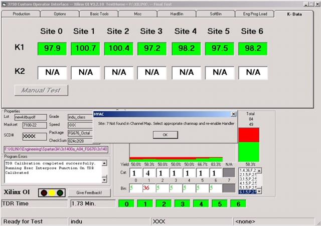
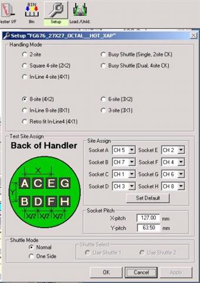
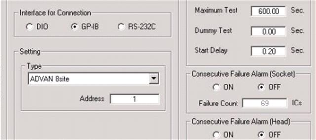

Service History
Subject: Site 7 Not found in Channel Map. Select appropriate chanmap and re-enable Handler
Handler Model: NS7080W (NS7KW-06, Xilinx)
Controller: RC520
Date: 6 Mar 2008
Symptom
NS7KW-06 handler Test Arm 1 causing “Site 7 Not found in Channel Map. Select appropriate channel map and re-enable Handler” on tester screen.

Details:
1) Load board used is a 7 site load board with 8 site outline. See “NS7KW mmi 06” picture. We used the octal site setup but disabled site 7.

2) Test program is written for 7 site.
3) Interface type used “ADVAN 8 site”, GPIB address:01

4) Using interface version: 4.1. See attached “NS7KW loader 06” picture.
5) Test Arm 2 no issue, can send SOT from handler and receive EOT from tester, no problem.
6) Manual send SOT from handler for site 1, same issue.
7) Tried to send manual SOT from tester with Arm 1 plunged down. No issue seen.
Suspect could be handler send 8 site SOT during test arm 1 testing instead of 7 site SOT signals, causing above problem
Action
7site loadboard using 8site setup disable 1 site. Tester receives “Channel 7 mapping not found” during Arm 1 in contact test mode but Arm 2 ok.
Verified this problem to be for both arms and not Arm 1 as reported. XAP disabled site but handler still issue SOT in contact test for all sites. Must disable channel instead of site.
No more error but hand test past and auto run fail. Tester program problem.
Tester program edited. Auto run for correlation unit running 1 lot.
Verified and no more tester hand due to channel 7 and 99% yield.
Cause
7site loadboard using 8site setup disable 1 site. Tester receives “Channel 7 mapping not found” for both arms and not Arm 1 as reported. XAP disabled site but handler still issue SOT in contact test for all sites. Must disable channel instead of site.